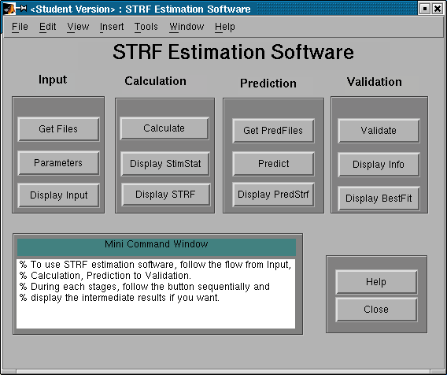
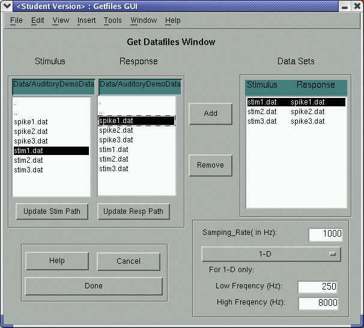
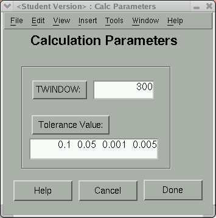
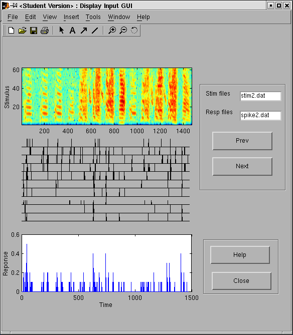
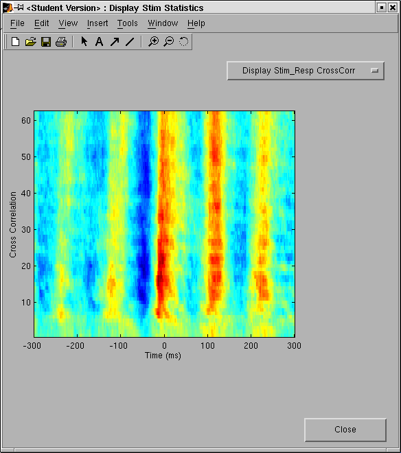
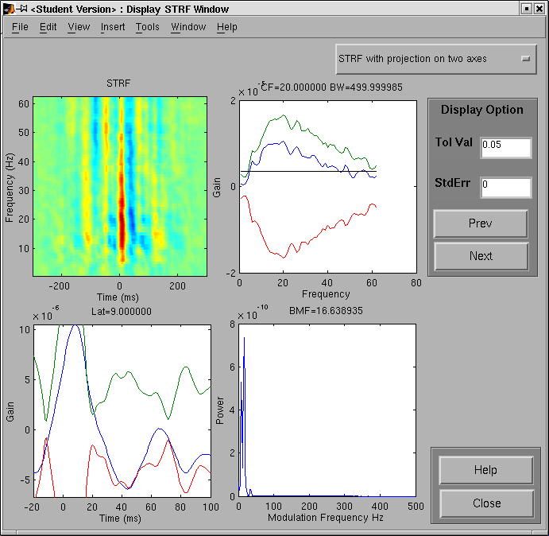
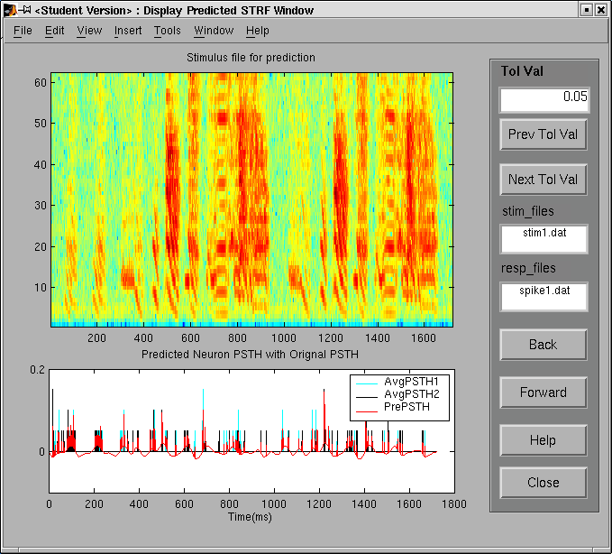
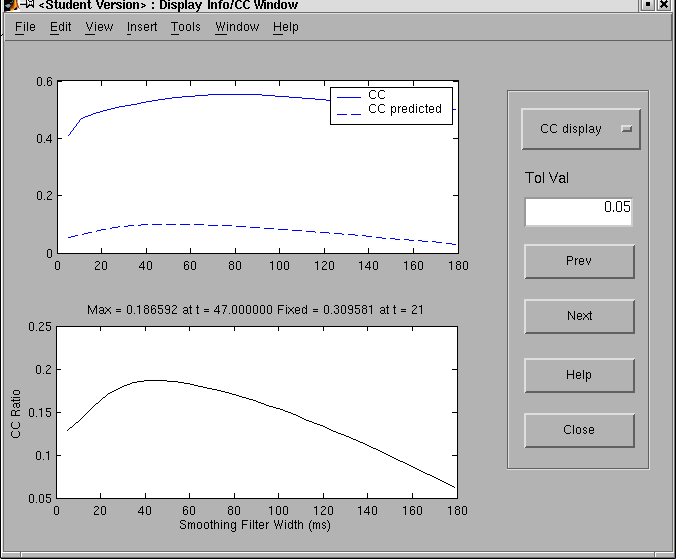
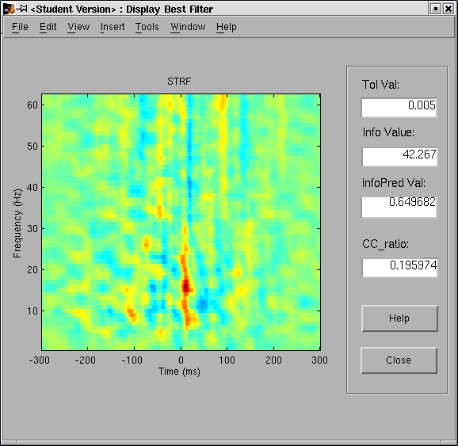

STRFPak demonstration
This tutorial is somewhat dated but it should give you a good feel for STRFPak. Note that STRFPak is implemented as a Matlab toolbox and includes an extensive GUI.
Starting STRFPak
To run the program at the MATLAB prompt type:
>>strfpak
The following graphics window should be displayed.

You can click the appropriate buttons to input the data files, estimate a STRF, predict a response and evaluate how well the STRF predicts responses.
Get Input Files Window
Click Get Files and the "Get Files" window will prompt you to enter the data sets and stimulus sampling rate. Select data set(s) by clicking inside the stim file list and response file list (scroll to see the selections and click on your choice). To select multiple data sets, hold down the CTRL key while clicking.
In the following example three data sets have been selected: "stim1.dat and spike1.dat", "stim2.dat and spike2.dat" and "stim3.dat and spike3.dat". The stimulus and response sampling rates are 1 millisecond. The dimensionality is set to one (i.e., the stimulus is a sound).

Set Calc. Parameter Window
The "Calc Parameter Window" will prompt you to enter the estimation parameters. TWINDOW is the range of lags for computing the auto/cross correlation (e.g. 300 ms). Spatio_size is the stimulus spatial dimension. In this example the spatial dimension is 62. Tol Val is the list of tolerance values for STRF estimation (e.g. 0.1, 0.05, 0.001, 0.0005).

Display Input Window
The "Display Input Window" shows three plots: the stimulus, the response and the trial-averaged response (peri-stimulus time histogram, or PSTH).

Display Stimulus Statistics
Two measures of stimulus statistics can be displayed: the stimulus auto-correlation and stimulus-response cross-correlation.

Display STRF
There are two options to display estimated STRFs: STRF only and the projection of the STRF on two axes.

Get Pred Files
Before the "Get PredFiles" window opens you are asked if you want to set matchflg parameter. The matchflg determines whether the original data are used for prediction, or whether a separate validation set should be used. In either case the STRF will be optimized by jacknifing to reduce over-fitting. The layout of the "Get PredFiles" window is the same as the "Get Files" window.
Display Pred STRF
The first plot in the "Display Pred STRF" window is the stimulus. The second plot compares the predicted and actual responses.

Display Info Value and Correlation Coeff
Two measures are available to quantify goodness of fit: coherence and correlation. The "Display Info/CC" window provides the predicted coherence and correlation coefficient.

Display Best Estimated Filter
The best STRF has the largest predicted information value. This window also shows the tolerance value that give the best prediction.
